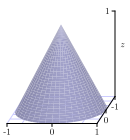
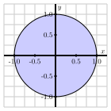
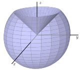

Section 11.8 Triple Integrals in Cylindrical and Spherical Coordinates
Motivating Questions
What are the cylindrical coordinates of a point, and how are they related to Cartesian coordinates?
What is the volume element in cylindrical coordinates? How does this inform us about evaluating a triple integral as an iterated integral in cylindrical coordinates?
What are the spherical coordinates of a point, and how are they related to Cartesian coordinates?
What is the volume element in spherical coordinates? How does this inform us about evaluating a triple integral as an iterated integral in spherical coordinates?
We have encountered two different coordinate systems in \(\R^2\) — the rectangular and polar coordinates systems — and seen how in certain situations, polar coordinates form a convenient alternative. In a similar way, there are two additional natural coordinate systems in \(\R^3\text{.}\) Given that we are already familiar with the Cartesian coordinate system for \(\R^3\text{,}\) we next investigate the cylindrical and spherical coordinate systems (each of which builds upon polar coordinates in \(\R^2\)). In what follows, we will see how to convert among the different coordinate systems, how to evaluate triple integrals using them, and some situations in which these other coordinate systems prove advantageous.
Preview Activity 11.8.1.
In the following questions, we investigate the two new coordinate systems that are the subject of this section: cylindrical and spherical coordinates. Our goal is to consider some examples of how to convert from rectangular coordinates to each of these systems, and vice versa. Triangles and trigonometry prove to be particularly important.
-
The cylindrical coordinates of a point in \(\R^3\) are given by \((r,\theta,z)\) where \(r\) and \(\theta\) are the polar coordinates of the point \((x, y)\) and \(z\) is the same \(z\) coordinate as in Cartesian coordinates. An illustration is given at left in Figure 11.8.1.
Find cylindrical coordinates for the point whose Cartesian coordinates are \((-1, \sqrt{3}, 3)\text{.}\) Draw a labeled picture illustrating all of the coordinates.
Find the Cartesian coordinates of the point whose cylindrical coordinates are \(\left(2, \frac{5\pi}{4}, 1\right)\text{.}\) Draw a labeled picture illustrating all of the coordinates.
-
The spherical coordinates of a point in \(\R^3\) are \(\rho\) (rho), \(\theta\text{,}\) and \(\phi\) (phi), where \(\rho\) is the distance from the point to the origin, \(\theta\) has the same interpretation it does in polar coordinates, and \(\phi\) is the angle between the positive \(z\) axis and the vector from the origin to the point, as illustrated at right in Figure 11.8.1. You should convince yourself that any point in \(\R^3\) can be represented in spherical coordinates with \(\rho \geq 0\text{,}\) \(0 \leq \theta \lt 2 \pi\text{,}\) and \(0 \leq \phi \leq \pi\text{.}\)
For the following questions, consider the point \(P\) whose Cartesian coordinates are \((-2,2,\sqrt{8})\text{.}\)
What is the distance from \(P\) to the origin? Your result is the value of \(\rho\) in the spherical coordinates of \(P\text{.}\)
Determine the point that is the projection of \(P\) onto the \(xy\)-plane. Then, use this projection to find the value of \(\theta\) in the polar coordinates of the projection of \(P\) that lies in the plane. Your result is also the value of \(\theta\) for the spherical coordinates of the point.
Based on the illustration in Figure 11.8.1, how is the angle \(\phi\) determined by \(\rho\) and the \(z\) coordinate of \(P\text{?}\) Use a well-chosen right triangle to find the value of \(\phi\text{,}\) which is the final component in the spherical coordinates of \(P\text{.}\) Draw a carefully labeled picture that clearly illustrates the values of \(\rho\text{,}\) \(\theta\text{,}\) and \(\phi\) in this example, along with the original rectangular coordinates of \(P\text{.}\)
Based on your responses to i., ii., and iii., if we are given the Cartesian coordinates \((x,y,z)\) of a point \(Q\text{,}\) how are the values of \(\rho\text{,}\) \(\theta\text{,}\) and \(\phi\) in the spherical coordinates of \(Q\) determined by \(x\text{,}\) \(y\text{,}\) and \(z\text{?}\)
Subsection 11.8.1 Cylindrical Coordinates
As we stated in Preview Activity 11.8.1, the cylindrical coordinates of a point are \((r,\theta,z)\text{,}\) where \(r\) and \(\theta\) are the polar coordinates of the point \((x, y)\text{,}\) and \(z\) is the same \(z\) coordinate as in Cartesian coordinates. The general situation is illustrated Figure 11.8.1.
Since we already know how to convert between rectangular and polar coordinates in the plane, and the \(z\) coordinate is identical in both Cartesian and cylindrical coordinates, the conversion equations between the two systems in \(\R^3\) are essentially those we found for polar coordinates.
Converting between Cartesian and cylindrical coordinates.
-
Converting from Cartesian to cylindrical..
If we are given the Cartesian coordinates \((x,y,z)\) of a point \(P\text{,}\) then the cylindrical coordinates \((r,\theta,z)\) of \(P\) satisfy
\begin{equation*} x = r \cos(\theta) \ \ \ \ \ y = r \sin(\theta) \ \ \ \ \ \text{ and } \ \ \ \ \ z = z. \end{equation*} -
Converting from cylindrical to cartesian..
If we are given the cylindrical coordinates \((r,\theta,z)\) of a point \(P\text{,}\) then the Cartesian coordinates \((x,y,z)\) of \(P\) satisfy
\begin{equation*} r^2 = x^2 + y^2 \ \ \ \ \ \tan(\theta) = \frac{y}{x} \ \ \ \ \ \text{ and } \ \ \ \ \ z = z, \end{equation*}assuming \(x \neq 0\text{.}\)
Just as with rectangular coordinates, where we usually write \(z\) as a function of \(x\) and \(y\) to plot the resulting surface, in cylindrical coordinates, we often express \(z\) as a function of \(r\) and \(\theta\text{.}\) In the following activity, we explore several basic equations in cylindrical coordinates and the corresponding surface each generates.
Activity 11.8.2.
In this activity, we graph some surfaces using cylindrical coordinates. To improve your intuition and test your understanding, you should first think about what each graph should look like before you plot it using appropriate technology.
What familiar surface is described by the points in cylindrical coordinates with \(r=2\text{,}\) \(0 \leq \theta \leq 2\pi\text{,}\) and \(0 \leq z \leq 2\text{?}\) How does this example suggest that we call these coordinates cylindrical coordinates? How does your answer change if we restrict \(\theta\) to \(0 \leq \theta \leq \pi\text{?}\)
What familiar surface is described by the points in cylindrical coordinates with \(\theta=2\text{,}\) \(0 \leq r \leq 2\text{,}\) and \(0 \leq z \leq 2\text{?}\)
What familiar surface is described by the points in cylindrical coordinates with \(z=2\text{,}\) \(0 \leq \theta \leq 2\pi\text{,}\) and \(0 \leq r \leq 2\text{?}\)
Plot the graph of the cylindrical equation \(z=r\text{,}\) where \(0 \leq \theta \leq 2\pi\) and \(0 \leq r \leq 2\text{.}\) What familiar surface results?
Plot the graph of the cylindrical equation \(z= \theta\) for \(0 \leq \theta \leq 4 \pi\text{.}\) What does this surface look like?
As the name and Activity 11.8.2 suggests, cylindrical coordinates are useful for describing surfaces that are cylindrical in nature.
Subsection 11.8.2 Triple Integrals in Cylindrical Coordinates
To evaluate a triple integral \(\iiint_S f(x,y,z) \, dV\) as an iterated integral in Cartesian coordinates, we use the fact that the volume element \(dV\) is equal to \(dz \, dy \, dx\) (which corresponds to the volume of a small box). To evaluate a triple integral in cylindrical coordinates, we similarly must understand the volume element \(dV\) in cylindrical coordinates.
Activity 11.8.3.
A picture of a cylindrical box, \(B = \{(r,\theta,z) : r_1 \leq r \leq r_2, \theta_1 \leq \theta \leq \theta_2, z_1 \leq z \leq z_2\},\) is shown in Figure 11.8.2. Let \(\Delta r = r_2-r_1\text{,}\) \(\Delta \theta = \theta_2 - \theta_1\text{,}\) and \(\Delta z = z_2-z_1\text{.}\) We want to determine the volume \(\Delta V\) of \(B\) in terms of \(\Delta r\text{,}\) \(\Delta \theta\text{,}\) \(\Delta z\text{,}\) \(r\text{,}\) \(\theta\text{,}\) and \(z\text{.}\)

Appropriately label \(\Delta r\text{,}\) \(\Delta \theta\text{,}\) and \(\Delta z\) in Figure 11.8.2.
Let \(\Delta A\) be the area of the projection of the box, \(B\text{,}\) onto the \(xy\)-plane, which is shaded blue in Figure 11.8.2. Recall that we previously determined the area \(\Delta A\) in polar coordinates in terms of \(r\text{,}\) \(\Delta r\text{,}\) and \(\Delta \theta\text{.}\) In light of the fact that we know \(\Delta A\) and that \(z\) is the standard \(z\) coordinate from Cartesian coordinates, what is the volume \(\Delta V\) in cylindrical coordinates?
Activity 11.8.3 demonstrates that the volume element \(dV\) in cylindrical coordinates is given by \(dV = r \, dz \, dr \, d\theta\text{,}\) and hence the following rule holds in general.
Triple integrals in cylindrical coordinates.
Given a continuous function \(f = f(x,y,z)\) over a region \(S\) in \(\R^3\text{,}\)
The latter expression is an iterated integral in cylindrical coordinates.
Of course, to complete the task of writing an iterated integral in cylindrical coordinates, we need to determine the limits on the three integrals: \(\theta\text{,}\) \(r\text{,}\) and \(z\text{.}\) In the following activity, we explore how to do this in several situations where cylindrical coordinates are natural and advantageous.
Activity 11.8.4.
In this activity we work with triple integrals in cylindrical coordinates.
-
Let \(S\) be the solid bounded above by the graph of \(z = x^2+y^2\) and below by \(z=0\) on the unit disk in the \(xy\)-plane.
The projection of the solid \(S\) onto the \(xy\)-plane is a disk. Describe this disk using polar coordinates.
Now describe the surfaces bounding the solid \(S\) using cylindrical coordinates.
Determine an iterated triple integral expression in cylindrical coordinates that gives the volume of \(S\text{.}\) You do not need to evaluate this integral.
Suppose the density of the cone defined by \(r = 1 - z\text{,}\) with \(z \geq 0\text{,}\) is given by \(\delta(r, \theta, z) = z\text{.}\) A picture of the cone is shown at left in Figure 11.8.3, and the projection of the cone onto the \(xy\)-plane in given at right in Figure 11.8.3. Set up an iterated integral in cylindrical coordinates that gives the mass of the cone. You do not need to evaluate this integral.
Figure 11.8.3. The cylindrical cone \(r = 1-z\) and its projection onto the \(xy\)-plane. Determine an iterated integral expression in cylindrical coordinates whose value is the volume of the solid bounded below by the cone \(z = \sqrt{x^2+y^2}\) and above by the cone \(z = 4 - \sqrt{x^2+y^2}\text{.}\) A picture is shown in Figure 11.8.4. You do not need to evaluate this integral.

Figure 11.8.4. A solid bounded by the cones \(z = \sqrt{x^2+y^2}\) and \(z = 4 - \sqrt{x^2+y^2}\text{.}\)
Subsection 11.8.3 Spherical Coordinates
As we saw in Preview Activity 11.8.1, the spherical coordinates of a point in 3-space have the form \((\rho, \theta, \phi)\text{,}\) where \(\rho\) is the distance from the point to the origin, \(\theta\) has the same meaning as in polar coordinates, and \(\phi\) is the angle between the positive \(z\) axis and the vector from the origin to the point. The overall situation is illustrated at right in Figure 11.8.1.
The example in Preview Activity 11.8.1 and Figure 11.8.5 suggest how to convert between Cartesian and spherical coordinates.
Coverting between Cartesian and spherical coordinates.
-
Converting from Cartesian to spherical..
If we are given the Cartesian coordinates \((x,y,z)\) of a point \(P\text{,}\) then the spherical coordinates \((\rho,\theta,\phi)\) of \(P\) satisfy
\begin{equation*} \rho = \sqrt{x^2 + y^2 + z^2} \ \ \ \ \ \tan(\theta) = \frac{y}{x} \ \ \ \ \ \text{ and } \ \ \ \ \ \cos(\phi) = \frac{z}{\rho}, \end{equation*}where in the latter two equations, we require \(x \ne 0\) and \(\rho \ne 0\text{.}\)
-
Converting from spherical to Cartesian..
If we are given the spherical coordinates \((\rho,\theta,\phi)\) of a point \(P\text{,}\) then the Cartesian coordinates \((x,y,z)\) of \(P\) satisfy
\begin{equation*} x = \rho \sin(\phi) \cos(\theta) \ \ \ \ \ y = \rho \sin(\phi) \sin(\theta) \ \ \ \ \ \text{ and } \ \ \ \ \ z = \rho \cos(\phi). \end{equation*}
When it comes to thinking about particular surfaces in spherical coordinates, similar to our work with cylindrical and Cartesian coordinates, we usually write \(\rho\) as a function of \(\theta\) and \(\phi\text{;}\) this is a natural analog to polar coordinates, where we often think of our distance from the origin in the plane as being a function of \(\theta\text{.}\) In spherical coordinates, we likewise often view \(\rho\) as a function of \(\theta\) and \(\phi\text{,}\) thus viewing distance from the origin as a function of two key angles.
In the following activity, we explore several basic equations in spherical coordinates and the surfaces they generate.
Activity 11.8.5.
In this activity, we graph some surfaces using spherical coordinates. To improve your intuition and test your understanding, you should first think about what each graph should look like before you plot it using appropriate technology.
What familiar surface is described by the points in spherical coordinates with \(\rho = 1\text{,}\) \(0 \leq \theta \leq 2\pi\text{,}\) and \(0 \leq \phi \leq \pi\text{?}\) How does this particular example demonstrate the reason for the name of this coordinate system? What if we restrict \(\phi\) to \(0 \leq \phi \leq \frac{\pi}{2}\text{?}\)
What familiar surface is described by the points in spherical coordinates with \(\phi = \frac{\pi}{3}\text{,}\) \(0 \leq \rho \leq 1\text{,}\) and \(0 \leq \theta \leq 2\pi\text{?}\)
What familiar shape is described by the points in spherical coordinates with \(\theta = \frac{\pi}{6}\text{,}\) \(0 \leq \rho \leq 1\text{,}\) and \(0 \leq \phi \leq \pi\text{?}\)
Plot the graph of \(\rho = \theta\text{,}\) for \(0 \leq \phi \leq \pi\) and \(0 \leq \theta \leq 2 \pi\text{.}\) How does the resulting surface appear?
As the name and Activity 11.8.5 indicate, spherical coordinates are particularly useful for describing surfaces that are spherical in nature; they are also convenient for working with certain conical surfaces.
Subsection 11.8.4 Triple Integrals in Spherical Coordinates
As with rectangular and cylindrical coordinates, a triple integral \(\iiint_S f(x,y,z) \, dV\) in spherical coordinates can be evaluated as an iterated integral once we understand the volume element \(dV\text{.}\)
Activity 11.8.6.
To find the volume element \(dV\) in spherical coordinates, we need to understand how to determine the volume of a spherical box of the form \(\rho_1 \leq \rho \leq \rho_2\) (with \(\Delta \rho = \rho_2-\rho_1)\text{,}\) \(\phi_1 \leq \phi \leq \phi_2\) (with \(\Delta \phi = \phi_2-\phi_1\)), and \(\theta_1 \leq \theta \leq \theta_2\) (with \(\Delta \theta = \theta_2-\theta_1\)). An illustration of such a box is given at left in Figure 11.8.6. This spherical box is a bit more complicated than the cylindrical box we encountered earlier. In this situation, it is easier to approximate the volume \(\Delta V\) than to compute it directly. Here we can approximate the volume \(\Delta V\) of this spherical box with the volume of a Cartesian box whose sides have the lengths of the sides of this spherical box. In other words,
where \(|\overset{\frown}{PR}|\) denotes the length of the circular arc from \(P\) to \(R\text{.}\)

What is the length \(|PS|\) in terms of \(\rho\text{?}\)
What is the length of the arc \(\overset{\frown}{PR}\text{?}\) (Hint: The arc \(\overset{\frown}{PR}\) is an arc of a circle of radius \(\rho_2\text{,}\) and arc length along a circle is the product of the angle measure (in radians) and the circle's radius.)
What is the length of the arc \(\overset{\frown}{PQ}\text{?}\) (Hint: The arc \(\overset{\frown}{PQ}\) lies on a horizontal circle as illustrated at right in Figure 11.8.6. What is the radius of this circle?)
Use your work in (a), (b), and (c) to determine an approximation for \(\Delta V\) in spherical coordinates.
Letting \(\Delta \rho\text{,}\) \(\Delta \theta\text{,}\) and \(\Delta \phi\) go to 0, it follows from the final result in Activity 11.8.6 that \(dV = \rho^2 \, \sin(\phi) \, d\rho \, d\theta \, d\phi \) in spherical coordinates, and thus allows us to state the following general rule.
Triple integrals in spherical coordinates.
Given a continuous function \(f = f(x,y,z)\) over a region \(S\) in \(\R^3\text{,}\) the triple integral \(\iiint_S f(x,y,z) \, dV\) is converted to the integral
in spherical coordinates.
The latter expression is an iterated integral in spherical coordinates.
Finally, in order to actually evaluate an iterated integral in spherical coordinates, we must of course determine the limits of integration in \(\phi\text{,}\) \(\theta\text{,}\) and \(\rho\text{.}\) The process is similar to our earlier work in the other two coordinate systems.
Activity 11.8.7.
We can use spherical coordinates to help us more easily understand some natural geometric objects.
Recall that the sphere of radius \(a\) has spherical equation \(\rho = a\text{.}\) Set up and evaluate an iterated integral in spherical coordinates to determine the volume of a sphere of radius \(a\text{.}\)
Set up, but do not evaluate, an iterated integral expression in spherical coordinates whose value is the mass of the solid obtained by removing the cone \(\phi=\frac{\pi}{4}\) from the sphere \(\rho = 2\) if the density \(\delta\) at the point \((x,y,z)\) is \(\delta(x,y,z) = \sqrt{x^2+y^2+z^2}\text{.}\) An illustration of the solid is shown in Figure 11.8.7.
Figure 11.8.7. The solid cut from the sphere \(\rho = 2\) by the cone \(\phi=\frac{\pi}{4}\text{.}\)
Subsection 11.8.5 Summary
-
The cylindrical coordinates of a point \(P\) are \((r,\theta,z)\) where \(r\) is the distance from the origin to the projection of \(P\) onto the \(xy\)-plane, \(\theta\) is the angle that the projection of \(P\) onto the \(xy\)-plane makes with the positive \(x\)-axis, and \(z\) is the vertical distance from \(P\) to the projection of \(P\) onto the \(xy\)-plane. When \(P\) has rectangular coordinates \((x,y,z)\text{,}\) it follows that its cylindrical coordinates are given by
\begin{equation*} r^2 = x^2 + y^2, \ \ \ \ \ \tan(\theta) = \frac{y}{x}, \ \ \ \ \ z = z. \end{equation*}When \(P\) has given cylindrical coordinates \((r,\theta,z)\text{,}\) its rectangular coordinates are
\begin{equation*} x = r \cos(\theta), \ \ \ \ \ y = r \sin(\theta), \ \ \ \ \ z = z. \end{equation*} -
The volume element \(dV\) in cylindrical coordinates is \(dV = r \, dz \, dr \, d\theta\text{.}\) Hence, a triple integral \(\iiint_S f(x,y,z) \, dA\) can be evaluated as the iterated integral
\begin{equation*} \iiint_S f(r\cos(\theta), r\sin(\theta), z) \, r \, dz \, dr \, d\theta. \end{equation*} -
The spherical coordinates of a point \(P\) in 3-space are \(\rho\) (rho), \(\theta\text{,}\) and \(\phi\) (phi), where \(\rho\) is the distance from \(P\) to the origin, \(\theta\) is the angle that the projection of \(P\) onto the \(xy\)-plane makes with the positive \(x\)-axis, and \(\phi\) is the angle between the positive \(z\) axis and the vector from the origin to \(P\text{.}\) When \(P\) has Cartesian coordinates \((x,y,z)\text{,}\) the spherical coordinates are given by
\begin{equation*} \rho^2 = x^2 + y^2 + z^2, \ \ \ \ \ \tan(\theta) = \frac{y}{x}, \ \ \ \ \ \cos(\phi) = \frac{z}{\rho}. \end{equation*}Given the point \(P\) in spherical coordinates \((\rho, \phi, \theta)\text{,}\) its rectangular coordinates are
\begin{equation*} x = \rho \sin(\phi) \cos(\theta), \ \ \ \ \ y = \rho \sin(\phi) \sin(\theta), \ \ \ \ \ z = \rho \cos(\phi). \end{equation*} -
The volume element \(dV\) in spherical coordinates is \(dV = \rho^2 \sin(\phi) \, d\rho \, d\theta \, d\phi\text{.}\) Thus, a triple integral \(\iiint_S f(x,y,z) \, dA\) can be evaluated as the iterated integral
\begin{equation*} \iiint_S f(\rho\sin(\phi)\cos(\theta), \rho \sin(\phi) \sin(\theta), \rho \cos(\phi)) \, \rho^2 \sin(\phi) \, d\rho \, d\theta \, d\phi. \end{equation*}
Exercises 11.8.6 Exercises
1.
What are the rectangular coordinates of the point whose cylindrical coordinates are
\((r= 6 ,\ \theta = \frac{5 \pi}{9} ,\ z= 6 )\) ?
x=
y=
z=
2.
What are the rectangular coordinates of the point whose spherical coordinates are
\(\left( 3 , -{\textstyle\frac{1}{6}} \pi, -{\textstyle\frac{1}{3}} \pi \right)\) ?
\(x =\)
\(y =\)
\(z =\)
3.
What are the cylindrical coordinates of the point whose spherical coordinates are
\((4 ,\ -5 ,\ \frac{4 \pi}{6} )\) ?
\(r\) =
\(\theta\) =
\(z\)=
4.
Find an equation for the paraboloid \(z = x^{2}+y^{2}\) in spherical coordinates. (Enter rho, phi and theta for \(\rho\text{,}\) \(\phi\) and \(\theta\text{,}\) respectively.)
equation:
5.
Match the given equation with the verbal description of the surface:
Plane
Circular Cylinder
Sphere
Elliptic or Circular Paraboloid
Cone
Half plane
\(\displaystyle \rho \cos(\phi )= 4\)
\(\displaystyle \phi = \frac{\pi}{3}\)
\(\displaystyle z = r^2\)
\(\displaystyle \rho = 2\cos(\phi )\)
\(\displaystyle r =4\)
\(\displaystyle \theta = \frac{\pi}{3}\)
\(\displaystyle \rho = 4\)
\(\displaystyle r^2 + z^2 =16\)
\(\displaystyle r = 2\cos(\theta )\)
6.
Match the integrals with the type of coordinates which make them the easiest to do. Put the letter of the coordinate system to the left of the number of the integral.
\(\displaystyle \int \!\! \int \!\! \int_E \ z^2 \ dV\) where E is: \(-2 \leq z \leq 2, \ \ 1 \leq x^2+y^2 \leq 2\)
\(\displaystyle \int \!\! \int_D \ \frac{1}{x^2+y^2} \ dA\) where D is: \(x^2+y^2 \leq 4\)
\(\displaystyle \int \!\! \int \!\! \int_E \ z \ dV\) where E is: \(1 \leq x \leq 2, \ \ 3 \leq y \leq 4, \ \ 5 \leq z \leq 6\)
\(\displaystyle \int \!\! \int \!\! \int_E \ dV\) where E is: \(x^2+y^2+z^2 \leq 4, \ \ x \geq 0, \ \ y \geq 0, \ \ z \geq 0\)
\(\displaystyle \displaystyle \int_{0}^{1} \! \int^{y^2}_{0} \ \frac{1}{x} \ dx \ dy\)
polar coordinates
cylindrical coordinates
cartesian coordinates
spherical coordinates
7.
Evaluate the integral.
\(\displaystyle \int_{0}^{3} \int_{-\sqrt{9-x^2}}^{\sqrt{9-x^2}} \int_{-\sqrt{9-x^2-z^2}}^{\sqrt{9-x^2-z^2}} \frac{1}{(x^2+y^2+z^2)^{1/2}} \, dy \, dz \, dx\) =
8.
Use cylindrical coordinates to evaluate the triple integral \(\displaystyle \int \!\! \int \!\! \int_{\mathbf{E}} \, \sqrt{x^{2} + y^{2}} \, dV\text{,}\) where E is the solid bounded by the circular paraboloid \(z = 4 - 1 \left( x^{2} + y^{2} \right)\) and the \(xy\) -plane.
9.
Use spherical coordinates to evaluate the triple integral \(\displaystyle \int \!\! \int \!\! \int_{\mathbf{E}} \, x^{2} + y^{2} + z^{2} \, dV\text{,}\) where E is the ball: \(x^{2} + y^{2} + z^{2} \leq 16\text{.}\)
10.
Find the volume of the solid enclosed by the paraboloids \(z = 4 \left( x^{2} + y^{2} \right)\) and \(z = 18 - 4 \left( x^{2} + y^{2} \right)\text{.}\)
11.
FInd the volume of the ellipsoid \(x^2 + y^2 + 7 z^2 = 25\text{.}\)
12.
The density, \(\delta\text{,}\) of the cylinder \(x^2+y^2\le 16\text{,}\) \(0\le z\le 5\) varies with the distance, \(r\text{,}\) from the \(z\)-axis:
Find the mass of the cylinder, assuming \(x,y,z\) are in cm.
mass =
13.
Suppose \(\displaystyle f(x,y,z) = \frac{1}{\sqrt{x^2+y^2+z^2}}\) and \(W\) is the bottom half of a sphere of radius \(5\text{.}\) Enter \(\rho\) as rho, \(\phi\) as phi, and \(\theta\) as theta.
(a) As an iterated integral,
\(\displaystyle \iiint\limits_{W} f \, dV = \int_A^B \!\! \int_C^D \!\! \int_E^F\) \(d\rho \, d\phi \, d\theta\)
with limits of integration
A =
B =
C =
D =
E =
F =
(b) Evaluate the integral.
14.
In each of the following questions, set up an iterated integral expression whose value determines the desired result. Then, evaluate the integral first by hand, and then using appropriate technology.
Find the volume of the “cap” cut from the solid sphere \(x^2 + y^2 + z^2 = 4\) by the plane \(z=1\text{,}\) as well as the \(z\)-coordinate of its centroid.
Find the \(x\)-coordinate of the center of mass of the portion of the unit sphere that lies in the first octant (i.e., where \(x\text{,}\) \(y\text{,}\) and \(z\) are all nonnegative). Assume that the density of the solid given by \(\delta(x,y,z) = \frac{1}{1+x^2+y^2+z^2}\text{.}\)
Find the volume of the solid bounded below by the \(xy\)-plane, on the sides by the sphere \(\rho=2\text{,}\) and above by the cone \(\phi = \pi/3\text{.}\)
Find the \(z\) coordinate of the center of mass of the region that is bounded above by the surface \(z = \sqrt{\sqrt{x^2 + y^2}}\text{,}\) on the sides by the cylinder \(x^2 + y^2 = 4\text{,}\) and below by the \(xy\)-plane. Assume that the density of the solid is uniform and constant.
Find the volume of the solid that lies outside the sphere \(x^2 + y^2 + z^2 = 1\) and inside the sphere \(x^2 + y^2 + z^2 = 2z\text{.}\)
15.
For each of the following questions,
sketch the region of integration,
change the coordinate system in which the iterated integral is written to one of the remaining two,
evaluate the iterated integral you deem easiest to evaluate by hand.
\(\displaystyle \int_{0}^{1} \int_{0}^{\sqrt{1-x^2}} \int_{\sqrt{x^2 + y^2}}^{\sqrt{2-x^2-y^2}} xy\, dz \, dy \, dx\)
\(\displaystyle \int_{0}^{\pi/2} \int_{0}^{\pi} \int_{0}^{1} \rho^2 \sin(\phi) \, d\rho \, d\phi \, d\theta\)
\(\displaystyle \int_{0}^{2\pi} \int_{0}^{1} \int_{r}^{1} r^2 \cos(\theta) \, dz \, dr \, d\theta\)
16.
Consider the solid region \(S\) bounded above by the paraboloid \(z = 16 - x^2 - y^2\) and below by the paraboloid \(z = 3x^2 + 3y^2\text{.}\)
Describe parametrically the curve in \(\R^3\) in which these two surfaces intersect.
In terms of \(x\) and \(y\text{,}\) write an equation to describe the projection of the curve onto the \(xy\)-plane.
What coordinate system do you think is most natural for an iterated integral that gives the volume of the solid?
Set up, but do not evaluate, an iterated integral expression whose value is average \(z\)-value of points in the solid region \(S\text{.}\)
Use technology to plot the two surfaces and evaluate the integral in (c). Write at least one sentence to discuss how your computations align with your intuition about where the average \(z\)-value of the solid should fall.
/webwork2_files/helpFiles/Units.html